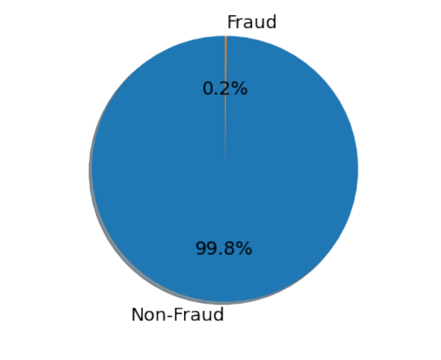

Machine Learning Project
This project applies machine learning to transactional data in order to detect potentially fraudulent activity. It emphasizes rigorous data preparation, class balancing, model evaluation, and practical comparison of learning approaches.

The goal of the project is to build a reliable fraud detection model using real-world style transaction patterns. A strong focus was placed on selecting effective preprocessing and balancing strategies to improve the model’s predictive strength.